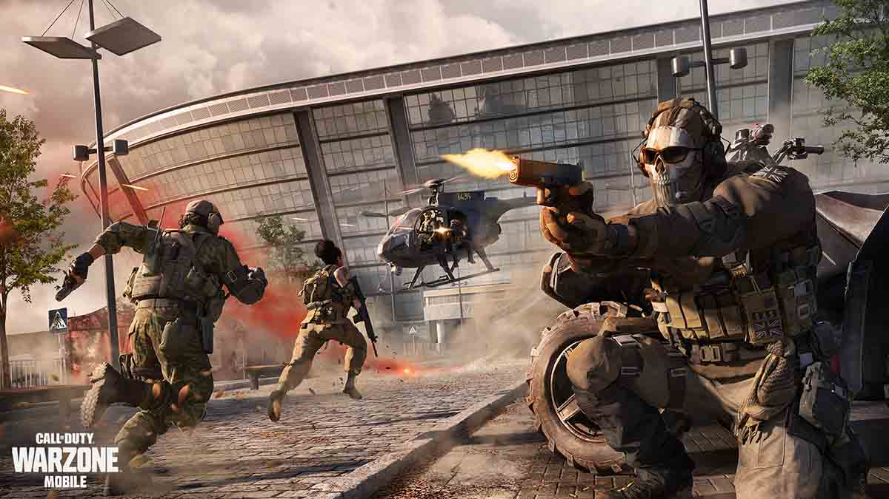

COD WARZONE
Call of Duty: Warzone fue un videojuego de disparos en primera persona, perteneciente al género Battle royale gratuito, lanzado el 10 de marzo de 2020 para PlayStation 4, PlayStation 5, Xbox One, Xbox Series X|S y Microsoft Windows. El modo juego estaba disponible en estas plataformas y es parte del videojuego de 2019, Call of Duty: Modern Warfare, pero no requiere su compra y se presentó durante la temporada 2 del contenido de Modern Warfare.
¿Cómo se juega?
Warzone presenta dos modos de juego principales: Battle Royale y Saqueo. Es la segunda entrega principal de Battle Royale en la franquicia Call of Duty,
siguiendo el modo "Blackout" de Call of Duty: Black Ops 4 (2018). Warzone se diferencia de Black Ops 4 al reducir la dependencia de los dispositivos equipables y,
en cambio, fomentar la acumulación de una nueva moneda en el juego llamada Dinero. Warzone admite hasta 150 jugadores en una sola partida,
lo que supera el tamaño típico de 100 jugadores visto en otros títulos de Battle Royale. Algunos modos de tiempo limitado admiten 200 jugadores o traer más de 2 armas.
Recuerda que lo puedes encontrar en las siguientes pltaformas.




Haz click aquí para saber más del juego y descargarlo. Diviertete!